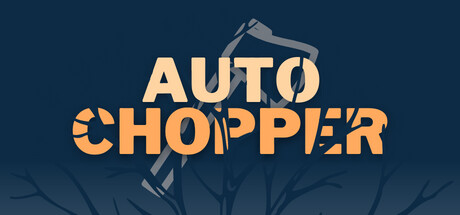

Roadmap

Upcoming
0.1.1
Improvements to the core actions of the game.
Movement
- [DONE] Implement bounce sound and visual effects to improve visibility of the walking state.
- [SKIPPED] (
Add dust effects to enhance the feeling of movement.) - [SKIPPED] (
Add haptic feedback to provide a tactile sensation when moving.)
Skipped some of the feedback since it was too much for an action that happens that often.
Throw
- Add trail effect for the axe to follow, making it easier for players to track its trajectory.
- Add visual and sound effects as feedback that the axe was thrown.
Hit
- Implement a directional shake effect to create a sense of impact.
- Add sound and visual effects to communicate the target was hit.
- Add sprite flash and a local X shake to show which target was hit.
Land
- Create visual and sound effects to signal the axe has hit the ground.
Spawn
- Add visual and sound effects to signal the tree was spawned.
Die
- Create break sound and visual effects to indicate the tree was chopped.
- Add a shake effect, freeze effect, and/or haptic feedback to signal the end of the game.
- Add haptic feedback and shake to create a havier sense of impact.
- Add freeze frames to recognize the hit
As for future milestones, they will depend on 0.1.1 feedback.
Completed
0.1.0
The game features movement, tree chopping, and axe throwing mechanics for players to interact with.
- [DONE]
Movement - [DONE]
Throw - [DONE]
Hit - [DONE]
Land - [DONE]
Spawn - [DONE]
Die